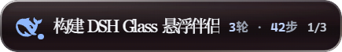
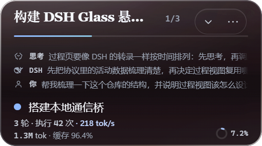
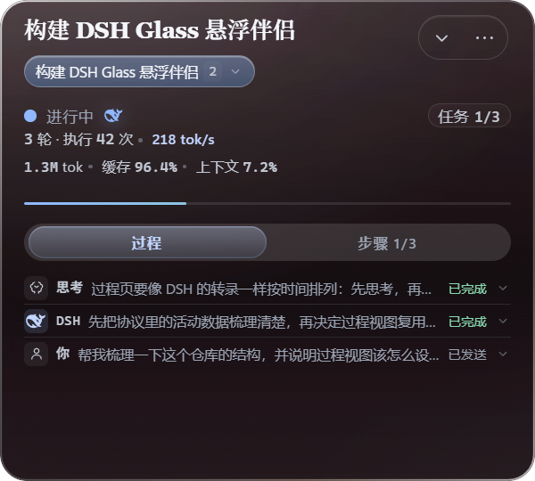
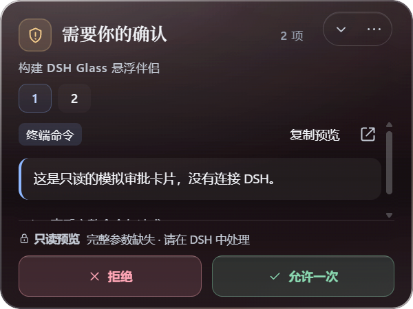
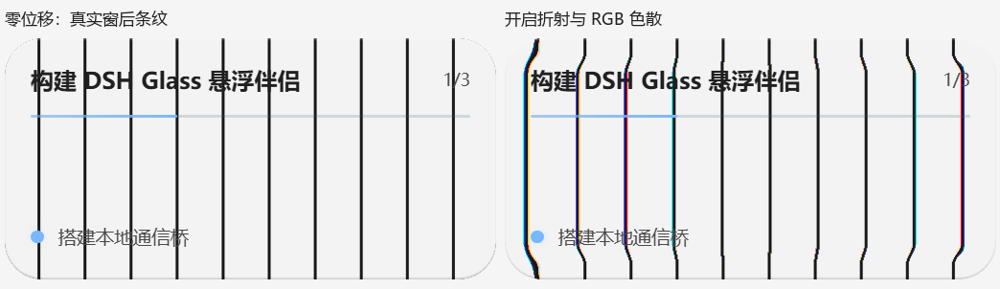
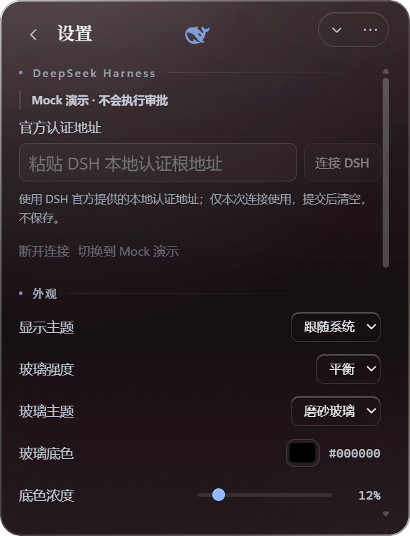

你让 DSH（DeepSeek Harness）干活的时候，是不是总得反复切窗口看「跑完没」？DSH Glass 就是来解决这件小事的——一块液态玻璃小悬浮窗，一直陪你在桌面上：任务跑到哪、下一步干什么、有没有事等你拍板，瞟一眼全知道。
像手机上的「灵动岛」：平时是个安静的小胶囊，有事时自己长大，没事时乖乖待着。你可以随手把它拖到屏幕任何角落、拉成顺手的大小。它只是个看板 + 传话筒，不抢戏、不越权。




普通悬浮窗只是把背景涂白假装透明；这块玻璃是真的会「看穿」它背后的东西——只取窗后一小块画面（不保存、不上传），再用同一套透镜把它折射出来：窗后的内容会被压弯约 13 个物理像素，边缘还带着一丝丝彩虹（RGB 色散）。下图左边是不开特效的样子，右边是玻璃折射后——竖条纹真的弯了。

这项能力默认关闭，要在设置里手动打开；关闭、隐藏窗口或程序退出时立刻停用。隐私条款就一句话：只看该看的那块，别的不碰。

玻璃只是传话筒，不是代理人：
1200
想深挖：跑起来看 docs/RUNNING.md；产品边界与协议看 docs/ 00-09 系列；每轮真实截图与验收记录都在 reports/ 目录。